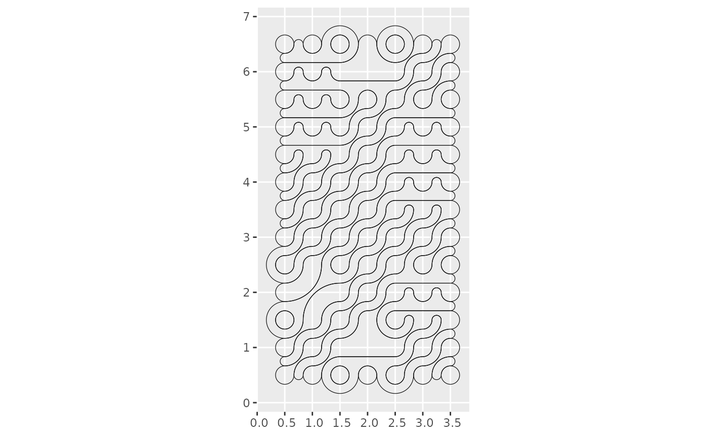
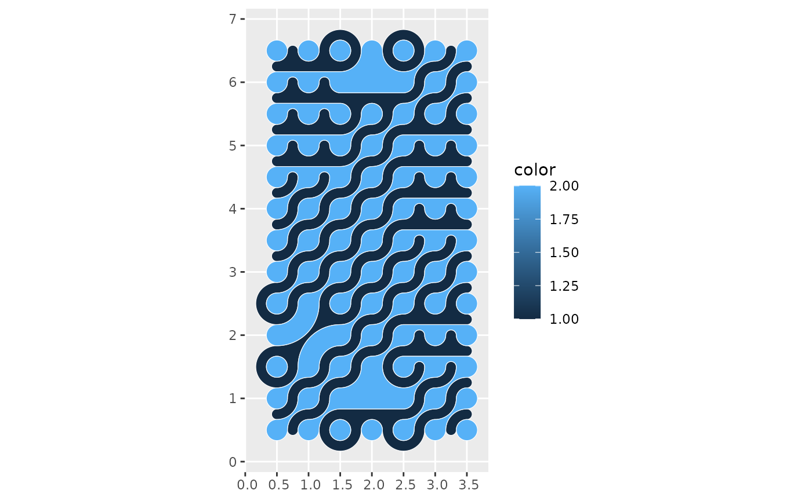
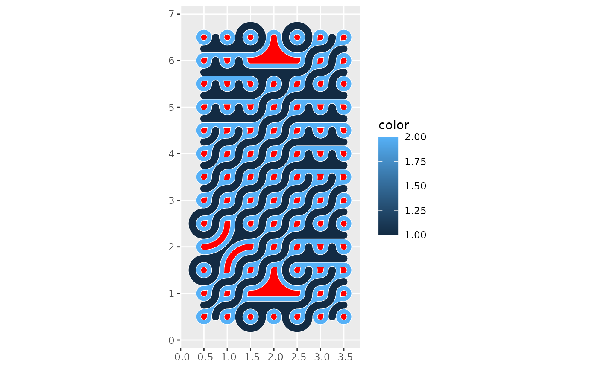

Working with tiles and mosaics as `sf` objects
Source:vignettes/articles/a02-tiles-mosaics-as-sf.Rmd
a02-tiles-mosaics-as-sf.RmdTiles and mosaics are simple features objects, which opens up numerous doors for working with them.
It is important to note that mosaics produced by
st_truchet_ms are collections of individual tiles generated
with st_truchet_p. The individual tiles are composed of
sf objects of geometry type POLYGONS. The coloring scheme
is designed to overlap perfectly when laying down collections of tiles
in mosaics, but the boundaries remain. This is illustrated next.
Load packages:
Create a mosaic:
set.seed(7352)
mosaic <- st_truchet_ms(tiles = c("dr", "tn"), p1 = 0.2, p2 = 0.8)The boundaries are evident when we color them:
This is not necessarily an issue, since the mosaic can be produced by filling the polygons while not coloring the boundaries:
The boundaries are “invisible”, but they still exist. A utility
function st_truchet_dissolve() can be used to dissolve the
boundaries and to create compact elements of the mosaic by color:
mosaic_dissolved <- st_truchet_dissolve(mosaic = mosaic)Technically, the function summarizes the geometry objects by color, and then performs a union to dissolve the boundaries. See:

The effect is the same as filling the polygons, but the boundaries can now be expressed too without the overlaps between the original individual tiles:

Since mosaics are sf data frames:
class(mosaic_dissolved)
#> [1] "sf" "tbl_df" "tbl" "data.frame"It is possible to use any tools available in the {sf} package. For example, here parts of the mosaic are buffered:
Plot the buffered tiles on top of the mosaic:
ggplot() +
geom_sf(data = mosaic_dissolved,
aes(fill = color),
color = "white") +
geom_sf(data = buffered_tiles,
fill = "red",
color = "white")
Points-in-polygon operations and so on can be used in combination with other techniques, such as circle packing.